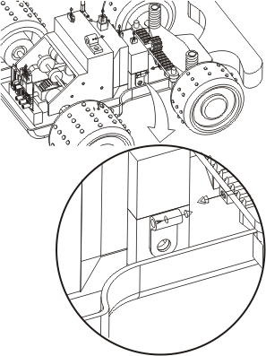

From the Assembly Navigator, show the rte1_e_clip_2 part inside the harness subassembly.

Make the top level of the assembly the Work Part.
Close the assembly. Make sure to save your version of the part.